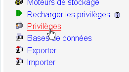
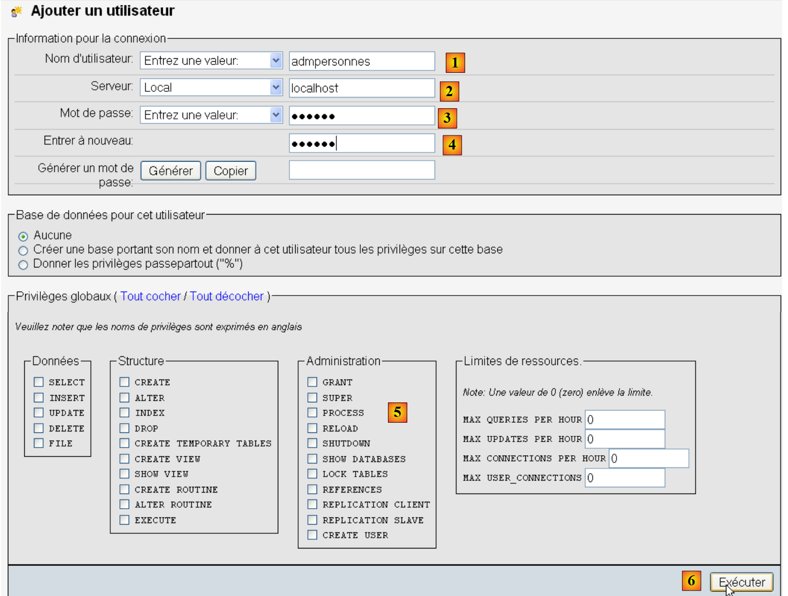

7. Using the MySQL DBMS
We will write PHP scripts using a MySQL database:
 |
The MySQL DBMS is included in the WampServer package (see section 2.1.1). We will show how to create a database and a MySQL user.
 |
- Once launched, WampServer can be managed via an icon [1] located at the bottom right of the taskbar.
- In [2], launch the MySQL administration tool
Create a database [dbpersonnes]:

Create a user [admpersonnes] with the password [nobody]:
 |  |
 |
- In [1], the user name
- At [2], the DBMS server on which you grant permissions
- in [3], their password
- in [4], same as above
- in [5], we do not grant any rights to this user
- in [6], create the user
 |
- in [7], return to the phpMyAdmin home page
- in [8], use the [Privileges] link on this page to modify the privileges for the user [admpersonnes] [9].
 |

- In [10], specify that you want to grant the user [admpersonnes] rights to the [dbpersonnes] database
- In [11], confirm the selection
 |
- using the [12] [Select All] link, grant the user [admpersonnes] all rights to the [dbpersonnes] database [13]
- Confirm in [14]
Now we have:
- a MySQL database [dbpersonnes]
- a user [admpersonnes / nobody] who has full access to this database
We will write PHP scripts to work with the database. PHP has various libraries for managing databases. We will use the PDO (PHP Data Objects) library, which acts as an interface between the PHP code and the DBMS:
 |
The PDO library allows the PHP script to abstract itself from the exact nature of the DBMS being used. Thus, as shown above, the MySQL DBMS can be replaced by the Postgres DBMS with minimal impact on the PHP script code. This library is not available by default. You can check its availability as follows:
 |
- 1: From the WampServer administration icon, select the [PHP / PHP extensions] option
- 2: You will see the various available PDO extensions and those that are active: [PHP_pdo_mysql] for the MySQL DBMS, [PHP_pdo_sqlite] for the SQLite DBMS. To enable an extension, simply click on it. The PHP interpreter is then restarted with the new extension enabled.
7.1. Connecting to a MySQL database – 1 (mysql_01)
Connecting to a DBMS is done by creating a PDO object. The constructor accepts various parameters:
The parameters have the following meanings:
$dsn | (Data Source Name) is a string specifying the type of DBMS and its location on the internet. The string "mysql:host=localhost" indicates that we are dealing with a MySQL DBMS running on the local server. This string may include other parameters, such as the DBMS listening port and the name of the database to you want to connect to: "mysql:host=localhost:port=3306:dbname=dbpersonnes". |
$user | username of the user logging in |
$passwd | their password |
$driver_options | an array of options for the DBMS driver |
Only the first parameter is required. The object created in this way will then serve as the vehicle for all operations performed on the database to which you have connected. If the PDO object could not be created, a PDOException is thrown.
Here is an example of a connection:
<?php
// Connect to a MySQL database
// The user ID is (admpersonnes,nobody)
$ID = "admpersonnes";
$PWD = "nobody";
$HOST = "localhost";
try {
// connection
$dbh = new PDO("mysql:host=$HOST", $ID, $PWD);
print "Connection successful\n";
// close
$dbh = null;
} catch (PDOException $e) {
print "Error: " . $e->getMessage() . "\n";
exit();
}
Results:
Comments
- Line 11: The connection to a DBMS is established by creating a PDO object. The constructor is used here with the following parameters:
- a string specifying the type of DBMS and its location on the internet. The string "mysql:host=localhost" indicates that we are dealing with a MySQL DBMS running on the local server. The port has not been specified. Port 3306 is therefore used by default. The database name is not specified either. A connection will then be established to the MySQL DBMS, with the selection of a specific database to be made later.
- a user ID
- its password
- Line 14: The connection is closed by destroying the PDO object created initially.
- Line 15: The connection to a DBMS may fail. In this case, a PDOException is thrown.
7.2. Creating a MySQL table (mysql_02)
<?php
// Connect to the MySQL database
// user ID
$ID = "admpersonnes";
$PWD = "nobody";
// database name
$DSN = "mysql:host=localhost;dbname=dbpersonnes";
// connection
list($error, $connection) = connect($DSN, $ID, $PWD);
if ($error) {
print "Error connecting to database [$DSN] using credentials ($ID, $PWD): $error\n";
exit;
}
// Delete the 'people' table if it exists
$query = "drop table people";
$error = executeQuery($connection, $query);
// Was there an error?
if ($error)
print "$query: Error ($error)\n";
else
print "$query: Execution successful\n";
// Create the people table
$query = "create table people (first_name varchar(30) NOT NULL, last_name varchar(30) NOT NULL, age integer NOT NULL, primary key(last_name, first_name))";
$error = executeQuery($connection, $query);
// Was there an error?
if ($error)
print "$query: Error ($error)\n";
else
print "$query: Execution successful\n";
// Disconnect and exit
disconnect($connection);
exit;
// ---------------------------------------------------------------------------------
function connect($dsn, $login, $pwd) {
// Connects ($login, $pwd) to the database $dsn
// returns the connection ID and an error code
try {
// connection
$dbh = new PDO($dsn, $login, $pwd);
// return without error
return array("", $dbh);
} catch (PDOException $e) {
// return with error
return array($e->getMessage(), null);
}
}
// ---------------------------------------------------------------------------------
function disconnect($connection) {
// closes the connection identified by $connection
$connection = null;
}
// ---------------------------------------------------------------------------------
function executeQuery($connection, $sql) {
// executes the $sql query on the $connection
try {
$connection->exec($sql);
// return without error
return "";
} catch (PDOException $e) {
// return with error
return $e->getMessage();
}
}
Results:
drop table people: Execution successful
create table people (first_name varchar(30) NOT NULL, last_name varchar(30) NOT NULL, age integer NOT NULL, primary key(last_name, first_name)): Execution successful
In PHPMyAdmin, you can see that the table exists:
 |
Comments
- Lines 38–50: The
connectfunction establishes a connection to a database management system (DBMS). It returns an array ($error, $connection*) where$connection*is the established connection ornullif the connection could not be established. In the latter case,$errorcontains an error message. - Lines 53–56: The
*disconnect* function closes a connection - Line 59: The
*executeQueryfunction allows you to execute an SQL statement on a connection. The connection is a PDO object. The method used to execute an SQL statement on a PDO object is the exec* method (line 63). Executing the query may throw a PDOException. Therefore, this is handled. The function returns an error message if an error occurs, an empty string otherwise.
7.3. Populating the people table (mysql_03)
The following script executes SQL statements found in the following text file [creation.txt]:
drop table people
create table people (first_name varchar(30) not null, last_name varchar(30) not null, age integer not null, primary key (last_name, first_name))
insert into people values('Paul','Langevin',48)
insert into people values ('Sylvie','Lefur',70)
insert into people values ('Pierre','Nicazou',35)
insert into people values ('Geraldine','Colou',26)
insert into people values ('Paulette','Girond',56)
<?php
// Connect to the MySQL database
// user ID
$ID = "admpersonnes";
$PWD = "nobody";
// database name
$DSN = "mysql:host=localhost;dbname=dbpersonnes";
// path to the text file containing the SQL commands to execute
$TEXT = "creation.txt";
// connection
list($error, $connection) = connect($DSN, $ID, $PWD);
if ($error) {
print "Error connecting to database [$DSN] using credentials ($ID, $PWD): $error\n";
exit;
}
// Create and populate the table
$errors = executeCommands($connection, $TEXT, 1, 0);
//display number of errors
print "There were $errors[0] errors\n";
for ($i = 1; $i < count($errors); $i++)
print "$errors[$i]\n";
// Disconnect and exit
disconnect($connection);
exit;
// ---------------------------------------------------------------------------------
function connect($dsn, $login, $pwd) {
...
}
// ---------------------------------------------------------------------------------
function disconnect($connection) {
...
}
// ---------------------------------------------------------------------------------
function executeQuery($connection, $sql) {
// executes the $sql query on the $connection
// returns an error message if an error occurs, otherwise returns an empty string
...
}
// ---------------------------------------------------------------------------------
function executeCommands($connection, $SQL, $trace=0, $stop=1) {
// uses the $connection connection
// executes the SQL commands contained in the text file $SQL
// this file is a file of SQL commands to be executed, one per line
// if $tracking=1, then each execution of an SQL command is followed by a message indicating whether it succeeded or failed
// If $stop=1, the function stops at the first error encountered; otherwise, it executes all SQL commands
// The function returns an array (number of errors, error1, error2, ...)
// Check if the $SQL file exists
if (!file_exists($SQL))
return array(1, "The $SQL file does not exist");
// execute the SQL queries contained in $SQL
// we put them into an array
$queries = file($SQL);
// execute them - initially, no errors
$errors = array(0);
for ($i = 0; $i < count($queries); $i++) {
// Is the query empty?
if (preg_match("/^\s*$/", $queries[$i]))
continue;
// execute query $i
$error = executeRequest($connection, $requests[$i]);
//was there an error?
if ($error) {
// one more error
$errors[0]++;
// error message
$msg = "$requests[$i]: Error ($error)\n";
$errors[] = $msg;
// Show on screen or not?
if ($tracking)
print "$msg\n";
// Stop?
if ($stop)
return $errors;
} else
if ($tracking)
print "$requests[$i]: Execution successful\n";
}//for
// return
return $errors;
}
Screen results:
drop table people: Execution successful
create table people (first_name varchar(30) not null, last_name varchar(30) not null, age integer not null, primary key (last_name, first_name)): Execution successful
insert into people values('Paul','Langevin',48): Execution successful
insert into people values ('Sylvie','Lefur',70): Execution successful
insert into people values ('Pierre','Nicazou',35): Execution successful
insert into people values ('Geraldine','Colou',26) : Execution successful
insert into people values ('Paulette','Girond',56) : Execution successful
There were 0 errors
The insertions made are visible in phpMyAdmin:
 |
Comments
The new feature is the executeCommands function in lines 48–90. This function executes the SQL commands found in the text file named $SQL on the $connection. It returns an error array ($nbErrors, $msg1, $msg2, …) where $nbErrors is the number of errors, and $msg1 is error message number i. If there are no errors, the returned array is array(0).
7.4. Executing arbitrary SQL queries (mysql_04)
The following script demonstrates the execution of SQL commands from the following text file [sql.txt]:
select * from people
select last_name, first_name from people order by last_name asc, first_name desc
select * from people where age between 20 and 40 order by age desc, last_name asc, first_name asc
insert into people values('Josette','Bruneau',46)
update people set age=47 where last_name='Bruneau'
SELECT * FROM people WHERE last_name='Bruneau'
delete from people where last_name='Bruneau'
SELECT * FROM people WHERE last_name='Bruneau'
xselect * from people where name='Bruneau'
Among these SQL statements, there is the SELECT statement, which returns results from the database; the INSERT, UPDATE, and DELETE statements, which modify the database without returning results; and finally, invalid statements such as the last one (xselect).
<?php
// Connect to the MySQL database
// user ID
$ID = "admpersonnes";
$PWD = "nobody";
// database credentials
$DSN = "mysql:host=localhost;dbname=dbpersonnes";
// path to the text file containing the SQL commands to execute
$TEXT = "sql.txt";
// connection
list($error, $connection) = connect($DSN, $ID, $PWD);
if ($error) {
print "Error connecting to database [$DSN] using credentials ($ID, $PWD): $error\n";
exit;
}
// execute SQL commands
$errors = executeCommands($connection, $TEXT, 1, 0);
// display number of errors
print "There were $errors[0] error(s)\n";
for ($i = 1; $i < count($errors); $i++)
print "$errors[$i]\n";
// Disconnect and exit
disconnect($connection);
exit;
// ---------------------------------------------------------------------------------
function connect($dsn, $login, $pwd) {
// Connects ($login, $pwd) to the $dsn database
// returns the connection ID and an error message
...
}
// ---------------------------------------------------------------------------------
function disconnect($connection) {
...
}
// ---------------------------------------------------------------------------------
function executeQuery($connection, $sql) {
// executes the $sql query on the $connection
// returns an array of 2 elements ($error, $result)
// Determine whether it is a SELECT query or not
$query = "";
if (preg_match("/^\s*(\S+)/", $sql, $fields)) {
$command = $fields[0];
}
// execute the command
try {
if (strtolower($command) == "select") {
$res = $connection->query($sql);
} else {
$res = $connection->exec($sql);
if($res===FALSE){
$info = $connection->errorInfo();
return array($info[2], null);
}
}
// Return without error
return array("", $res);
} catch (PDOException $e) {
// return with error
return array($e->getMessage(), null);
}
}
// ---------------------------------------------------------------------------------
function executeCommands($connection, $SQL, $tracking=0, $stop=1) {
// uses the $connection connection
// executes the SQL commands contained in the text file $SQL
// this file is a file of SQL commands to be executed, one per line
// if $log=1, then each execution of an SQL command is followed by a message indicating whether it succeeded or failed
// if $stop=1, the function stops at the first error encountered; otherwise, it executes all SQL commands
// the function returns an array (number of errors, error1, error2, ...)
// Check if the $SQL file exists
if (!file_exists($SQL))
return array(1, "The $SQL file does not exist");
// execute the SQL queries contained in $TEXT
// we put them into an array
$queries = file($SQL);
// execute them - initially, no errors
$errors = array(0);
for ($i = 0; $i < count($queries); $i++) {
// Is the query empty?
if (preg_match("/^\s*$/", $requests[$i]))
continue;
// execute query $i
list($error, $res) = executeQuery($connection, $queries[$i]);
// Was there an error?
if ($error) {
// one more error
$errors[0]++;
// error message
$msg = "$requests[$i]: Error ($error)\n";
$errors[] = $msg;
// Log to screen or not?
if ($log)
print "$msg\n";
// should we stop?
if ($stop)
return $errors;
} else
if ($tracking) {
print "$requests[$i]: Execution successful\n";
// information about the result of the executed request
displayInfo($res);
}
}//for
// return
return $errors;
}
// ---------------------------------------------------------------------------------
function displayInfo($result) {
// displays the $result of an SQL query
// Was it a SELECT query?
if ($result instanceof PDOStatement) {
// display the field names
$title = "";
$numberOfColumns = $result->columnCount();
for ($i = 0; $i < $numberOfColumns; $i++) {
$info = $result->getColumnMeta($i);
$title.=$info['name'] . ",";
}
// remove the last character,
$title = substr($title, 0, strlen($title) - 1);
// display the list of fields
print "$title\n";
// separator line
$separators = "";
for ($i = 0; $i < strlen($title); $i++) {
$separators.="-";
}
print "$separators\n";
// data
foreach ($result as $row) {
$data = "";
for ($i = 0; $i < $nbColumns; $i++) {
$data.=$row[$i] . ",";
}
// remove the last character,
$data = substr($data, 0, strlen($data) - 1);
// display
print "$data\n";
}
} else {
// it wasn't a SELECT
print " $result lines have been modified\n";
}
}
Screen results:
select * from people
: Execution successful
first_name,last_name,age
--------------
Geraldine, Colou, 26
Paulette, Girond, 56
Paul, Langevin, 48
Sylvie, Lefur, 70
Pierre, Nicazou, 35
SELECT last_name, first_name FROM people ORDER BY last_name ASC, first_name DESC: Execution successful
last_name,first_name
----------
Colou, Geraldine
Girond, Paulette
Langevin, Paul
Lefur, Sylvie
Nicazou, Pierre
select * from people where age between 20 and 40 order by age desc, last_name asc, first_name asc : Query executed successfully
first_name,last_name,age
--------------
Pierre, Nicazou, 35
Geraldine,Colou,26
insert into people values('Josette','Bruneau',46) : Execution successful
1 row(s) was (were) modified
update people set age=47 where name='Bruneau': Execution successful
1 row(s) has (have) been modified
SELECT * FROM people WHERE last_name='Bruneau': Execution successful
first_name,last_name,age
--------------
Josette,Bruneau,47
delete from people where last_name='Bruneau' : Execution successful
1 row(s) modified
select * from people where last_name='Bruneau': Execution successful
first_name,last_name,age
--------------
xselect * from people where last_name='Bruneau': Error (You have an error in your SQL syntax; check the manual that corresponds to your MySQL server version for the right syntax to use near 'xselect * from people where last_name='Bruneau'' at line 1)
There was 1 error
xselect * from people where last_name='Bruneau': Error (You have an error in your SQL syntax; check the manual that corresponds to your MySQL server version for the correct syntax to use near 'xselect * from people where last_name='Bruneau'' at line 1)
Comments
Each command in the text file [sql.txt] is executed by the exécuteRequête function on line 43.
- Line 43: The two parameters of the function are the connection ($connexion) on which the SQL commands are to be executed and the SQL command ($sql) to be executed. The function returns an array of two values ($erreur, $résultat) where
- $error is an error message, which may be empty if no error occurred
- $result: the result returned by executing the SQL statement. This result varies depending on whether the statement is a SELECT statement or an INSERT, UPDATE, or DELETE statement.
- Lines 48–51: We retrieve the first element of the SQL statement to determine whether it is a SELECT statement or an INSERT, UPDATE, or DELETE statement.
- line 55: in the case of a SELECT statement, it is executed using the [PDO]->query("SELECT statement") method. The returned result is a PDOStatement object.
- Line 57: In the case of an INSERT, UPDATE, or DELETE statement, it is executed using the [PDO]->exec("SQL statement") method. The result returned is the number of rows modified by the SQL statement. Thus, if a DELETE SQL statement deletes two rows, the returned result is the integer 2. If an error occurs during execution, the returned result is the boolean false. In this case, the [PDO]->errorinfo() method provides information about the error in the form of an array of values. The element at index 2 of this array is the error message.
- lines 58–60: handling of any errors from the [PDO]->exec("SQL statement") operation.
- lines 65–68: Handling any exceptions
- Line 72: The
executeCommandsfunction executes the SQL commands stored in the text file*$SQL*on the connection*$connection*. This is code we've already seen, with one minor difference: line 111. - Line 111: The
executeQueryfunction returned an array (*$error*, *$result*), where$result*is the result of executing an SQL command. This result varies depending on whether the SQL command was aSELECT*statement or anINSERT*,UPDATE*, orDELETE*statement. ThedisplayInfo* function displays information about this result. - Line 122: If the SQL statement was a SELECT statement, the result is of type PDOStatement. This type represents a table consisting of rows and columns.
- line 125: the method [PDOStatement]->getColumnCount() returns the number of columns in the table resulting from the SELECT
- Line 127: The [PDOStatement]->getMeta(i) method returns a dictionary of information about column i of the SELECT result table. In this dictionary, the value associated with the 'name' key is the column name.
- Lines 127–129: The column names from the SELECT result table are concatenated into a string.
- Lines 141–145: A PDOStatement object can be iterated over using a foreach loop. At each iteration, the returned element is a row from the SELECT result table in the form of an array of values representing the values of the row’s various columns. We display all these values using a for loop.
- Line 154: The result of executing an INSERT, UPDATE, or DELETE statement is the number of rows modified by the statement.